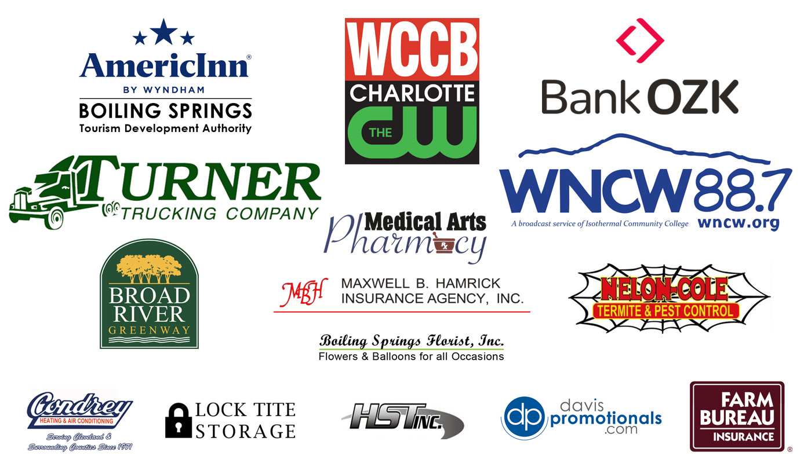

EVENT BEGINS IN
Experience Webbstock
Music. Art. Food. Experiences. Community. Surprises.
Gardner-Webb University and the Town of Boiling Springs are shutting down Main Street to bring you the experience of jammin’ music, good vibes, thrilling moments, and lifelong memories.
The March 28 event starts at 3 p.m. and will include live performances by top local and regional music artists, food vendors, handmade goods by artisans, kid zone activities, a firework display to conclude the event, and the Broad River Greenway will host a beverage garden for attendees 21+.
Plan your day at #Webbstock—Explore the festival map.
Performances by
Info
When and where will the festival be held?
Who is performing this year?
Stage Schedule
3-4 p.m. Love & Valor
4-4:30 p.m. Tonal Spectrum
5-6 p.m. BlackWater Band
6-6:20 p.m. TooRaw (street dancer)
6:30 p.m. Scott Moss and the $100 Handshakes
8:00 p.m. Acoustic Syndicate
9:15 p.m. Fireworks
What will be the format of the event?
Is this event family friendly?
Will there be Webbstock merchandise sold?
- T-shirts
- Hats
- Cups
- Stickers
Will restrooms be available?
What is being done to make the festival a safe, family-friendly environment?
Where is first aid located?
Will child care be provided
Where will alcohol be served?
What can't I bring with me?
- Alcohol
- Audio Recording Devices
- Drones or Remote Control Aircraft, Toys or Cars
- Drugs & Drug Paraphernalia
- Fireworks or Explosives
- Glass, Cans, Cups or Coolers
- Instruments
- Knives, Weapons, etc.
- Laser Pointers
- Pets
- Selfie Sticks
- Tobacco or Vapor Products
What should I bring with me?
- Planning to enjoy the Broad River Beverage Garden —bring a government issued ID
- A plan to get home safely
- A fully charged cell phone (bring a portable charger too, if you've got one)
- Water bottle
- Rain poncho/umbrella if rainy weather is in the forecast (Webbstock will go on rain or shine)
- Earplugs (it may get a little loud)
- A hat, sunglasses and sunblock
- Some cash (be sure to check out our delicious food vendors!)
Can I bring a camera?
For the chance to be featured—#Webbstock
Can I bring a bag to the festival?
What is the cost to attend?
Where is parking available?
Where is ADA parking?
Do I need cash?
Are there ATMs on site?
What happens if it rains?
Can I still be a vendor?
Sponsors

Contact
For press inquiries, contact ntmanning@gardner-webb.edu
For partnership and sponsorship inquiries, contact: ahinton2@gardner-webb.edu
For access/ADA inquiries, contact: disabilityservices@gardner-webb.edu